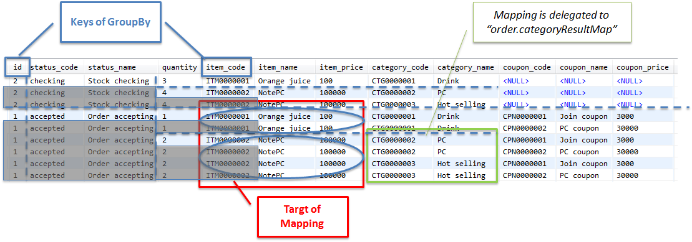
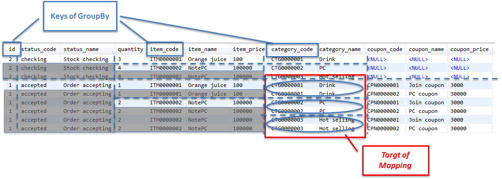

5.3. データベースアクセス（Mybatis2編）¶
目次
5.3.1. Overview¶

Picture - Target of description
5.3.1.1. Mybatisについて¶
5.3.1.2. TERASOLUNA DAOについて¶
TERASOLUNA DAOは、O/R Mapperに依存する処理を隠蔽するためのDAOインタフェースと、Mybatis2.xを使用したDAO実装クラスを提供している。
TERASOLUNA DAOから提供されているDAOインタフェースは、以下の通りである。
TERASOLUNA DAOから提供されているDAOインタフェース 項番 クラス名 説明
参照系SQLを実行するためのDAOインタフェース
更新系SQLを実行するためのDAOインタフェース
StoredProcedureを実行するためのDAOインタフェース
参照系SQLを実行して取得されるレコードに対して、一レコードずつ処理を行うためのDAOインタフェース。
TERASOLUNA DAO(Mybatis実装)を使って、データベースにアクセスする際の基本フローを、以下に示す。

Picture - Basic flow of TERASOLUNA DAO
項番 説明 JDBCドライバは、渡されたSQLとバインド値を、データベースに送信することで、SQLを実行する。
5.3.2. How to use¶
5.3.2.1. pom.xmlの設定¶
インフラストラクチャ層にMyBatis2(TERASOLUNA DAO)を使用する場合、以下のdependencyをpom.xmlに追加する。
<!-- (1) --> <dependency> <groupId>org.terasoluna.gfw</groupId> <artifactId>terasoluna-gfw-mybatis2</artifactId> </dependency>
項番 説明
5.3.2.2. アプリケーションの設定¶
5.3.2.2.1. データソースの設定¶
データソースに設定は、共通編のデータソースの設定を参照されたい。
5.3.2.2.2. PlatformTransactionManagerの設定¶
ローカルトランザクションを使用する場合、JDBCのAPIを呼び出してトランザクション制御を行うorg.springframework.jdbc.datasource.DataSourceTransactionManagerを使用する。
- xxx-env.xml
<bean id="transactionManager" class="org.springframework.jdbc.datasource.DataSourceTransactionManager"> <!-- (1) --> <property name="dataSource" ref="dataSource" /> <!-- (2) --> </bean>
項番 説明 org.springframework.jdbc.datasource.DataSourceTransactionManagerを指定する。 設定済みのデータソースのbeanを指定する。
アプリケーションサーバから提供されているトランザクションマネージャを使用する場合は、以下の通りに設定する。
アプリケーションサーバから提供されているトランザクションマネージャを使用する場合、JTAのAPIを呼び出してトランザクション制御を行うorg.springframework.transaction.jta.JtaTransactionManagerを使用する。
- xxx-env.xml
<tx:jta-transaction-manager /> <!-- (1) -->
項番 説明
5.3.2.2.3. TERASOLUNA DAOの設定¶
Spring Frameworkから提供されているSqlMapClientのファクトリクラスと、TERASOLUNA DAOのbean定義を行う。
- xxx-infra.xml
<bean id="sqlMapClient" class="org.springframework.orm.ibatis.SqlMapClientFactoryBean"> <!-- (1) --> <property name="configLocations" value="classpath*:/META-INF/mybatis/config/*sqlMapConfig.xml" /> <!-- (2) --> <property name="mappingLocations" value="classpath*:/META-INF/mybatis/sql/**/*-sqlmap.xml" /> <!-- (3) --> <property name="dataSource" ref="dataSource" /> <!-- (4) --> </bean> <bean id="queryDAO" class="jp.terasoluna.fw.dao.ibatis.QueryDAOiBatisImpl"> <!-- (5) --> <property name="sqlMapClient" ref="sqlMapClient" /> <!-- (6) --> </bean> <!-- (5) (6) --> <bean id="updateDAO" class="jp.terasoluna.fw.dao.ibatis.UpdateDAOiBatisImpl"> <property name="sqlMapClient" ref="sqlMapClient" /> </bean> <!-- (5) (6) --> <bean id="spDAO" class="jp.terasoluna.fw.dao.ibatis.StoredProcedureDAOiBatisImpl"> <property name="sqlMapClient" ref="sqlMapClient" /> </bean> <!-- (5) (6) --> <bean id="queryRowHandleDAO" class="jp.terasoluna.fw.dao.ibatis.QueryRowHandleDAOiBatisImpl"> <property name="sqlMapClient" ref="sqlMapClient" /> </bean>
項番 説明 SqlMapClientクラスのファクトリクラスとして、org.springframework.orm.ibatis.SqlMapClientFactoryBeanを指定する。 設定済みのデータソースのbeanを指定する。 TERASOLUNA DAOのMybatis実装クラスを指定して、bean定義する。 (1)で定義したSqlMapClientクラスのファクトリクラスのbeanを指定する。
5.3.2.2.4. LOB型を扱う場合の設定¶
BLOBやCLOBなどのLarge Objectを扱う場合は、SqlMapClientクラスのファクトリクラスに、LobHandlerを指定する。
- xxx-infra.xml
<!-- (1) --> <bean id="nativeJdbcExtractor" class="org.springframework.jdbc.support.nativejdbc.SimpleNativeJdbcExtractor" /> <!-- (2) --> <bean id="lobHandler" class="org.springframework.jdbc.support.lob.OracleLobHandler"> <property name="nativeJdbcExtractor" ref="nativeJdbcExtractor" /> <!-- (3) --> </bean> <bean id="sqlMapClient" class="org.springframework.orm.ibatis.SqlMapClientFactoryBean"> <property name="configLocations" value="classpath*:/META-INF/mybatis/config/*sqlMapConfig.xml" /> <property name="mappingLocations" value="classpath*:/META-INF/mybatis/sql/**/*-sqlmap.xml" /> <property name="dataSource" ref="dataSource" /> <property name="lobHandler" ref="lobHandler" /> <!-- (4) --> </bean>
項番 説明
5.3.2.2.5. Mybatisの設定¶
SqlMapClientのデフォルトの動作をカスタマイズする。必要に応じてカスタマイズすること。
- sqlMapConfig.xml
<?xml version="1.0" encoding="UTF-8" ?> <!DOCTYPE sqlMapConfig PUBLIC "-//ibatis.apache.org//DTD SQL Map Config 2.0//EN" "http://ibatis.apache.org/dtd/sql-map-config-2.dtd"> <!-- (1) --> <sqlMapConfig> <settings useStatementNamespaces="true" /> <!-- (2) --> </sqlMapConfig>
項番 説明 DTDファイルを指定する。指定することで、スキーマのチェックと、IDE上でのコード補完が有効となる。 useStatementNamespaces="true"を設定することで、SQLマッピングファイルで指定するネームスペースを、SQLIDとして使用するように設定している。
- sqlMapConfigの子要素について
子要素として、properties, settings,resultObjectFactory, typeAlias, transactionManager, sqlMapが存在する。必要に応じて、設定を行うこと。詳細は、Mybatis Developer Guide(PDF)の「The SQL Map XML Configuration File」(P.8-16)を参照されたい。
sqlMapConfigの子要素 項番 要素 説明
properties
settings
resultObjectFactory
typeAlias
transactionManager トランザクション管理は、Spring Frameworkの機能を使うため、定義は不要である。
sqlMap TERASOLUNA DAOの設定で設定済みのため、定義は不要である。
5.3.2.3. SQLマッピングの実装(基本編)¶
以下に、基本的なSQLマッピングの実装例を示す。
アプリケーション内で使用するSQLを実装する。
- xxx-sqlmap.xml
<?xml version="1.0" encoding="UTF-8" ?> <!DOCTYPE sqlMap PUBLIC "-//ibatis.apache.org//DTD SQL Map 2.0//EN" "http://ibatis.apache.org/dtd/sql-map-2.dtd"> <!-- (1) --> <sqlMap namespace="xxx"> <!-- (2) --> <!-- (3) --> <select id="findOne"> <!-- ... --> </select> <!-- ... --> </sqlMap>
項番 説明 DTDファイルを指定する。指定することで、スキーマのチェックと、STS上でのコード補完が有効となる。 ネームスペースを指定する。 sqlMapConfig.xmlにて、ネームスペースをSQLIDとして使用するように設定しているので、このSQLを実行するために指定するSQLIDは「xxx.findOne」となる。
- sqlMapの子要素について
子要素として、cacheModel, typeAlias, parameterMap, resultMap, select, insert, update, delete, statement, sql, procedureが存在する。
sqlMapの子要素 項番 要素 説明
typeAlias sqlMapConfig.xmlのtypeAliasと同じ。
cacheModel オブジェクトのキャッシュの定義を行う要素
parameterMap SQLにバインドするパラメータ（オブジェクト）のマッピングに関する定義を行う要素
resultMap SQLの実行結果として返却されるレコードとオブジェクトのマッピングに関する定義を行う要素
select SELECT文を記載する要素
insert INSERT文を記載する要素
update UPDATE文を記載する要素
delete DELETE文を記載する要素
statement select, insert, update, delete, procedure 要素を包含している汎用要素。個別の要素(select, insert, update, delete, procedure)を使用することを推奨する。
sql select, insert, update, delete, statementからインクルードするためのSQL文（SQL文の一部）を記載する要素。この要素をうまく使うことで、複数のSQLで重複している部分を、共通化することができる。
procedure PROCEDURE呼び出しを記載する要素 Note
詳細は、Mybatis Developer Guide(PDF)の、以下の章を参照されたい。
Warning
statement, select, procedure要素を使用して、大量データを返すようなクエリを記述する場合には、fetchSize属性に適切な値を設定しておくこと。 fetchSize属性は、JDBCドライバとデータベース間の通信において、一度の通信で取得するデータの件数を設定するパラメータである。 fetchSize属性を省略した場合は、各JDBCドライバのデフォルト値が利用されるため、デフォルト値が全件取得するJDBCドライバの場合、メモリの枯渇の原因になる可能性があるので、注意が必要となる。
5.3.2.3.1. select要素の実装例¶
select要素を実装する前に、検索したレコードのカラムと、JavaBeanのプロパティのマッピング定義を行う。
- xxx-sqlmap.xml
<resultMap id="resultMap_Todo" class="xxxxxx.yyyyyy.zzzzzz.domain.model.Todo"> <!-- (1) --> <result property="todoId" column="todo_id" /> <!-- (2) --> <result property="todoTitle" column="todo_title" /> <result property="finished" column="finished" /> <result property="createdAt" column="created_at" /> <result property="version" column="version" /> </resultMap>
項番 属性 説明 検索したレコードとJavaBeanのマッピングを行う。詳細は、Developer Guideを参照されたい。 マッピングを識別するためのIDを指定する。select属性から参照される。 マッピングするJavaBeanのFQCNを指定する。 JavaBeanのプロパティと、検索したレコードのカラムのマッピングを行う。 JavaBeanのプロパティ名を指定する。 property属性で指定したプロパティに、マッピングするレコードのカラム名を指定する。
select要素を実装する。
- xxx-sqlmap.xml
<select id="findOne" parameterClass="java.lang.String" resultMap="resultMap_Todo"> <!-- (3) --> SELECT * FROM todo WHERE todo_id = #todoId# /* (4) */ </select>
項番 属性 説明 検索用SQLを実装する。 検索SQLを識別するためのIDを指定する。 Note
自動マッピングについて
resultMap属性を使わずに、resultClass属性で指定したJavaBeanのプロパティに、自動的にマッピングすることもできるが、取得レコードのカラム名と、JavaBeanのプロパティ名が一致している必要がある。 取得レコードのカラム名と、JavaBeanのプロパティ名を一致させる方法として、AS句を使って、カラム名に別名を付与する方法がある。下記に、自動マッピングを使用した場合の実装例を示す。
<select id="findOne" parameterClass="java.lang.String" resultClass="xxxxxx.yyyyyy.zzzzzz.domain.model.Todo"> SELECT todo_id AS todoId, todo_title AS todoTitle, finished, created_at AS createdAt, version FROM todo WHERE todo_id = #todoId# </select>自動マッピングは、取得したレコードとJavaBeanをマッピングする手段としては、もっとも簡単な方法である。ただし、自動マッピングを使用した場合は、以下の制約や注意点があることを考慮し、使用すること。
- SQLで取得した値の型宣言や、変換定義などが行えない。
- 複雑なマッピング（例えば、ネストされているJavaBeanへのマッピング）が行えない。
- マッピングする際に、java.sql.ResultSetMetaDataにアクセスするため、若干のパフォーマンス劣化が発生する。
5.3.2.3.2. insert要素の実装例¶
insert要素を実装する。
- xxx-sqlmap.xml
<insert id="insert" parameterClass="xxxxxx.yyyyyy.zzzzzz.domain.model.Todo"> <!-- (1) --> INSERT INTO todo ( todo_id ,todo_title ,finished ,created_at ,version ) values( #todoId# /* (2) */ ,#todoTitle# ,#finished# ,#createdAt# ,1 ) </insert>
項番 属性 説明 挿入用SQLを実装する。 挿入用SQLを識別するためのIDを指定する。 バインド用オブジェクトの型を指定する。JavaBeanを指定することもできる。 SQLにバインド値を指定する。バインド用オブジェクトにJavaBeanを使用する場合は、バインド用の変数名は、JavaBeanのプロパティ名と一致させる必要がある。 Note
parameterMap属性や、”Inline Parameter Maps”の仕組みを使用することで、SQLにバインドする値の型の宣言や、変換定義を行うことができる。 例えば、バインド値がnullの場合に、デフォルト値を設定することができる。詳細は、Mybatis Developer Guide(PDF)の「Parameter Maps and Inline Parameters」(P.27-31)を参照されたい。
5.3.2.3.3. update要素の実装例¶
update要素を実装する。
- xxx-sqlmap.xml
<update id="update" parameterClass="xxxxxx.yyyyyy.zzzzzz.domain.model.Todo"> <!-- (1) --> UPDATE todo SET todo_id = #todoId# ,todo_title = #todoTitle# ,finished = #finished# ,version = (#version# + 1) WHERE todo_id = #todoId# AND version = #version# </update>
項番 説明 更新用SQLを実装する。
5.3.2.3.4. delete要素の実装例¶
delete要素を実装する。
- xxx-sqlmap.xml
<delete id="delete" parameterClass="java.lang.String"> <!-- (1) --> DELETE FROM todo WHERE todo_id = #todoId# </delete>
項番 説明 削除用SQLを実装する。
5.3.2.3.5. procedure要素の実装例¶
以下は、PostgreSQLに作成したファンクションを、procedure要素を使って呼び出す例となっている。
テーブルと、ファンクション(PL/pgSQL実装)を作成するSQLは、以下の通りである。
CREATE TABLE sales ( itemno INT4 PRIMARY KEY, quantity INT4 NOT NULL, price INT4 NOT NULL );CREATE FUNCTION sales_item(p_itemno INT4) RETURNS TABLE ( quantity INT4 ,total INT4 ) AS $$ BEGIN RETURN QUERY SELECT s.quantity ,s.quantity * s.price FROM sales s WHERE itemno = p_itemno; END; $$ LANGUAGE plpgsql;
parameterMap要素を実装する。
<!-- (1) --> <parameterMap id="salesItemMap" class="xxxxxx.yyyyyy.zzzzzz.domain.model.SalesItem"> <!-- (2) --> <parameter property="id" jdbcType="INTEGER" mode="IN" /> <!-- (3) --> <parameter property="quantity" jdbcType="INTEGER" mode="OUT" /> <parameter property="total" jdbcType="INTEGER" mode="OUT" /> </parameterMap>// (4) public class SalesItem implements Serializable { private Integer id; private Integer quantity; private Integer total; // ... }
項番 説明 ファンクションに渡すINパラメータと、OUTパラメータのマッピングを定義する。 INパラメータのマッピングを定義している。INパラメータに、SalesItem#idをマッピングしている。 OUTパラメータのマッピングを定義している。OUTパラメータの1番目をSalesItem#quantityに、2番目をSalesItem#totalにマッピングしている。 マッピング対象となるJavaBean。 Note
parameterMap属性を使わずに、”Inline Parameter Maps”の仕組みでマッピングする事もできる。 具体例は、Mybatis Developer Guide(PDF)の「Parameter Maps and Inline Parameters」(P.31)を参照されたい。
procedure要素を実装する。
<procedure id="findSalesItem" parameterMap="salesItemMap"> <!-- (1) --> {call sales_item(?,?,?)} </procedure>
項番 説明
5.3.2.3.6. sql要素の実装例¶
sql要素の実装する。
- xxx-sqlmap.xml
<sql id="fragment_where_byFinished"> <!-- (1) --> WHERE finished = #finished# </sql> <select id="findByFinished" parameterClass="boolean" resultMap="resultMap_Todo"> <!-- (2) --> SELECT * FROM todo <include refid="fragment_where_byFinished" /> <!-- (3) --> ORDER BY created_at DESC </select> <select id="countByFinished" parameterClass="boolean" resultClass="long"> <!-- (4) --> SELECT count(*) FROM todo <include refid="fragment_where_byFinished" /> <!-- (5) --> </select>
項番 説明 (2)と(4)のSQLで共有するWHERE句を定義している。includeされるSQLの定義は、includeする側のSQLより先に、定義する必要がある。 条件に一致するデータを取得するためのSQL (1)で定義したWHERE句が実装されているSQLを、includeする。 条件に一致するデータ件数を取得するためのSQL (1)で定義したWHERE句が実装されているSQLを、includeする。
5.3.2.3.7. LOB型更新の実装例¶
- DDL
CREATE TABLE upload_binary ( file_id CHAR(36) NOT NULL, file_name VARCHAR(256) NOT NULL, content BLOB NOT NULL, -- (1) CONSTRAINT pk_upload_binary PRIMARY KEY (file_id) );
項番 説明
- DTO(JavaBean)
public class BinaryFile implements Serializable { // omitted private String fileId; private String fileName; private InputStream content; // (2) // omitted setter/getter }
項番 説明 Warning
BLOBを扱う プロパティの型は、原則InputStream型で定義することを推奨する。 BLOBはバイト配列として扱うこともできるが、データの容量が大きくなると、メモリ枯渇の原因となる可能性がある。
CLOBを扱うプロパティの型は、 原則java.io.Reader型で定義することを推奨する。 CLOBは文字列として扱うこともできるが、データの容量が大きくなると、メモリ枯渇の原因となる可能性がある。
- xxx-sqlmap.xml
<parameterMap id="uploadBinaryParameterMap" class="xxxxxx.yyyyyy.zzzzzz.domain.service.BinaryFile"> <parameter property="fileId" /> <parameter property="fileName" /> <!-- (3) --> <parameter property="content" jdbcType="BLOB" typeHandler="jp.terasoluna.fw.orm.ibatis.support.BlobInputStreamTypeHandler" /> </parameterMap> <!-- (4) --> <insert id="uploadBinary" parameterMap="uploadBinaryParameterMap"> INSERT INTO upload_binary ( file_id ,file_name ,content ) VALUES ( ? ,? ,? ) </insert>
項番 説明 Note
CLOBを扱う場合は、jdbcType属性には"CLOB"を、typeHandler属性には"jp.terasoluna.fw.orm.ibatis.support.ClobReaderTypeHandler"を指定する。
Tip
FQCNで指定しているクラス名は、 typeAlias要素を使って別名を付与することで、シンプルに記載することができる。
<!-- (5) --> <typeAlias alias="BinaryFile" type="xxxxxx.yyyyyy.zzzzzz.domain.service.BinaryFile"/> <typeAlias alias="BlobInputStreamTypeHandler" type="jp.terasoluna.fw.orm.ibatis.support.BlobInputStreamTypeHandler"/> <parameterMap id="uploadBinaryParameterMap" class="BinaryFile"> <!-- (6) --> <!-- omitted --> <parameter property="content" jdbcType="BLOB" typeHandler="BlobInputStreamTypeHandler" /> <!-- (6) --> </parameterMap>
項番 説明
- Service
// omitted @Inject UpdateDAO updateDAO; // omitted public BinaryFile uploadBinaryFile(String fileName, InputStream contentInputStream) { // (7) BinaryFile inputtedFile = new BinaryFile(); inputtedFile.setFileId(UUID.randomUUID().toString()); inputtedFile.setFileName(fileName); inputtedFile.setContent(contentInputStream); // (8) updateDAO.execute("example.uploadBinary", inputtedFile); return inputtedFile; } // omitted
項番 説明
- Controller
@RequestMapping("uploadBinary") public String uploadBinaryFile( @RequestPart("file") MultipartFile multipartFile, Model model) throws IOException { // (9) BinaryFile uploadedFile = uploadService.uploadBinaryFile(multipartFile .getOriginalFilename(), multipartFile.getInputStream()); model.addAttribute(uploadedFile); return "upload/form"; }
項番 説明
5.3.2.3.8. LOB型取得の実装例¶
- xxx-sqlmap.xml
<resultMap id="selectBinaryResultMap" class="BinaryFile"> <result property="fileId" column="file_id" /> <result property="fileName" column="file_name" /> <!-- (1) --> <result property="content" column="content" jdbcType="BLOB" typeHandler="BlobInputStreamTypeHandler" /> </resultMap> <!-- (2) --> <select id="selectBinary" parameterClass="java.lang.String" resultMap="selectBinaryResultMap"> SELECT * FROM upload_binary WHERE file_id = #fileId# </select>
項番 説明 Note
CLOBを扱う場合は、jdbcType属性には"CLOB"を、typeHandler属性には"jp.terasoluna.fw.orm.ibatis.support.ClobReaderTypeHandler"を指定する。
- Service / Repository
// omitted @Inject QueryDAO queryDAO; // omitted public BinaryFile getBinaryFile(String fileId) { // (3) BinaryFile loadedFile = queryDAO.executeForObject( "article.selectBinary", fileId, BinaryFile.class); return loadedFile; } // omitted
項番 説明
5.3.2.4. SQLマッピングの実装例(動的SQL編)¶
5.3.2.4.1. パラメータオブジェクトの指定有無を判定¶
SQLに渡されたパラメータオブジェクトが指定されているかを判定し、SQLを組み立てることができる。
判定用の要素は、以下の通りである。
項番 要素 説明
isParameterPresent パラメータオブジェクトが指定されている(NULLでない)時のSQLを組み立てるための要素。
isNotParameterPresent パラメータオブジェクトが指定されていない(NULLである)時のSQLを組み立てるための要素。
実装例は、以下の通りである。
<select id="findOne" parameterClass="java.lang.Integer" resultMap="..."> SELECT * FROM t_order WHERE <isParameterPresent> <!-- (1) --> id = #id# </isParameterPresent> <isNotParameterPresent> <!-- (2) --> 1 = 2 </isNotParameterPresent> <!-- ... --> </select>
項番 説明
上記の動的SQLで生成されるSQLは、以下2パターンとなる。
-- (1) parameterObject(id)=1 SELECT * FROM t_order WHERE id = 1 -- (2) SELECT * FROM t_order WHERE 1 = 2
5.3.2.4.2. パラメータオブジェクト(JavaBean)のプロパティの存在有無を判定¶
SQLに渡されたパラメータオブジェクト(JavaBean)に指定したプロパティが存在するか判定し、SQLを組み立てることができる。
判定用の要素は、以下の通りである。
項番 要素 説明
isPropertyAvailable 指定したプロパティが、存在する時のSQLを組み立てるための要素。
isNotPropertyAvailable 指定したプロパティが、存在しない時のSQLを組み立てるための要素。
実装例は、以下の通りである。
<select id="findOne" parameterClass="OrderCriteria" resultMap="..."> SELECT * FROM t_order WHERE <isPropertyAvailable property="statusCode"> <!-- (1) --> status_code = #statusCode# </isPropertyAvailable> <isNotPropertyAvailable property="statusCode"> <!-- (2) --> <![CDATA[ status_code <> 'completed' ]]> </isNotPropertyAvailable> <!-- ... --> </select>
項番 説明
上記の動的SQLで生成されるSQLは、以下2パターンとなる。
-- (1) statusCode='checking' SELECT * FROM t_order WHERE status_code = 'checking' -- (2) SELECT * FROM t_order WHERE status_code <> 'completed'
5.3.2.4.3. パラメータオブジェクト(JavaBean)のプロパティ値の設定有無を判定¶
SQLに渡されたパラメータオブジェクト(JavaBean)のプロパティに値が指定されているか判定し、SQLを組み立てることができる。
判定用の要素は、以下の通りである。
項番 要素 説明
isNull プロパティの値が、null時のSQLを組み立てるための要素。
isNotNull プロパティの値が、nullでない時のSQLを組み立てるための要素。
isEmpty プロパティの値が、nullまたは、空の時のSQLを組み立てるための要素。 Collectionおよび、Stringに対して、指定することができる。
isNotEmpty プロパティの値が、nullおよび、空でない時のSQLを組み立てるための要素。 Collectionおよび、Stringに対して、指定することができる。
実装例は、以下の通りである。
<select id="findOne" parameterClass="OrderCriteria" resultMap=""> SELECT * FROM t_order WHERE <isNull property="orderedDate"> <!-- (1) --> <![CDATA[ CURRENT_DATE - '1 months'::interval <= ordered_date ]]> </isNull> <isNotNull property="orderedDate"> <!-- (2) --> ordered_date = #orderedDate# </isNotNull> <isEmpty property="statusCodes" prepend="AND"> <!-- (3) --> <![CDATA[ status_code <> 'completed' ]]> </isEmpty> <isNotEmpty property="statusCodes" prepend="AND"> <!-- (4) --> status_code IN <iterate property="statusCodes" open="(" close=")" conjunction=","> #statusCodes[]# </iterate> </isNotEmpty> </select>
項番 説明
上記の動的SQLで生成されるSQLは、以下4パターンとなる。
-- (1) orderedDate=null, statusCodes=[] SELECT * FROM t_order WHERE CURRENT_DATE - '1 months'::interval <= ordered_date AND status_code <> 'completed' -- (2) orderedDate=null, statusCodes=['accepted','checking'] SELECT * FROM t_order WHERE CURRENT_DATE - '1 months'::interval <= ordered_date AND status_code IN ('accepted','checking') -- (3) orderedDate=2013/12/31, statusCodes=null SELECT * FROM t_order WHERE ordered_date = '2013/12/31' AND status_code <> 'completed' -- (4) orderedDate=2013/12/31, statusCodes=['accepted'] SELECT * FROM t_order WHERE ordered_date = '2013/12/31' AND status_code IN ('accepted')
5.3.2.4.4. パラメータオブジェクト(JavaBean)のプロパティ値を判定¶
SQLに渡されたパラメータオブジェクト(JavaBean)のプロパティに指定されている値を判定し、SQLを組み立てることができる。
判定用の要素は、以下の通りである。
項番 要素 説明
isEqual プロパティの値が、指定した値と一致する時のSQLを組み立てるための要素。
isNotEqual プロパティの値が、指定した値と一致しない時のSQLを組み立てるための要素。
isGreaterThan プロパティの値が、指定した値より大きい時のSQLを組み立てるための要素。
isGreaterEqual プロパティの値が、指定した値以上の時のSQLを組み立てるための要素。
isLessThan プロパティの値が、指定した値より小さい時のSQLを組み立てるための要素。
isLessEqual プロパティの値が、指定した値以下の時のSQLを組み立てるための要素。
実装例は、以下の通りである。
<select id="findOne" parameterClass="OrderCriteria" resultMap="..."> SELECT * FROM t_order WHERE ( <![CDATA[ status_code <> 'completed' ]]> <isEqual property="containCompletedOrder" compareValue="true" prepend="OR"> <!-- (1) --> status_code = 'completed' </isNull> ) </select>
項番 説明 Note
compareProperty属性を使用することで、JavaBean内の別のプロパティの値と、比較することもできる。
上記の動的SQLで生成されるSQLは、以下2パターンとなる。
-- (1) containCompletedOrder=false SELECT * FROM t_order WHERE (status_code <> 'completed') -- (2) containCompletedOrder=true SELECT * FROM t_order WHERE (status_code <> 'completed' OR status_code = 'completed')
5.3.2.4.5. 判定要素の共通属性¶
動的SQLを組み立てるための要素には、以下の共通的な属性が存在する。
項番 属性 説明
prepend 動的SQLを組み立てるための判定要素で、trueと判断され、SQLが組み立てられた際に、SQLの先頭に設定する文字列を指定する。
open 動的SQLを組み立てるための判定要素の中で、組み立てたSQLの前に追加する文字列を指定する。
close 動的SQLを組み立てるための判定要素の中で、組み立てたSQLの後に付与する文字列を指定する。
実装例は、以下の通りである。
<select id="findOne" parameterClass="OrderCriteria" resultMap="..."> SELECT * FROM t_order <isNotEmpty property="statusCode" prepend="WHERE" open="(" close=")"> <!-- (1) --> status_code = #statusCode# <isEqual property="containCompletedOrder" compareValue="true" prepend="OR"> status_code = 'completed' </isEqual> </isNotEmpty> </select>
項番 属性 説明
上記の動的SQLで生成されるSQLは、以下3パターンとなる。
-- (1) statusCode=null, containCompletedOrder=false SELECT * FROM t_order -- (2) statusCode='accepted', containCompletedOrder=false SELECT * FROM t_order WHERE (status_code = 'accepted') -- (3) statusCode='checking', containCompletedOrder=true SELECT * FROM t_order WHERE (status_code = 'checking' OR status_code = 'completed')
5.3.2.4.6. コレクションの繰り返し¶
SQLに渡されたバインド値が、コレクションや配列の場合、コレクションおよび配列の要素分処理を繰り返して、SQLを組み立てることができる。
要素は、以下の通りである。
項番 要素 説明
iterate コレクションおよび配列に対して、繰り返し処理を行い、SQLを組み立てるための要素。
実装例は、以下の通りである。
<select id="findOne" parameterClass="OrderCriteria" resultMap="..."> SELECT * FROM t_order <isNotNull property="statusCodes" prepend="WHERE"> <iterate property="statusCodes" prepend="status_code IN" open="(" conjunction="," close=")" > <!-- (1) --> #statusCodes[]# </iterate> </isNotNull> </select>
項番 属性 説明 Note
上記例は、JavaBeanの中のプロパティがコレクションの場合の実装例であるが、パラメータオブジェクト自体をコレクションにすることもできる。 その場合は、property属性は指定せず、#[]#という形式でアクセスすることができる。
コレクションには、JavaBeanを格納することもでき、JavaBeanにネストされているコレクションにも、アクセスすることができる。 詳細は、Developer Guide(PDF)の「Dynamic Mapped Statements」(P.52)を参照されたい。
上記の動的SQLで生成されるSQLは、以下3パターンとなる。
-- (1) statusCodes=null SELECT * FROM t_order -- (2) statusCodes=[] SELECT * FROM t_order -- (3) statusCodes=['accepted','checking'] SELECT * FROM t_order WHERE status_code IN ('accepted' , 'checking')
5.3.2.4.7. 動的SQLのブロック化¶
個々の動的SQLをブロック化することで、ブロック全体として、prepend, open, close属性を制御することができる。
要素は、以下の通りである。
項番 要素 説明
dynamic 動的SQLを組み立てる要素をブロック化するための要素。
実装例は、以下の通りである。
<select id="findOne" parameterClass="OrderCriteria" resultMap="..."> SELECT * FROM t_order WHERE <dynamic prepend="WHERE" open="(" close=")"> <!-- (1) --> <isNotEmpty property="id" prepend="AND"> <!-- (2) --> id = #id# </isNotEmpty> <isNotEmpty property="statusCode" prepend="AND"> <!-- (3) --> status_code = #statusCode# </isNotEmpty> </dynamic> </select>
項番 属性 説明
上記の動的SQLで生成されるSQLは、以下4パターンとなる。
-- (1) id=null, statusCode=null SELECT * FROM t_order -- (2) id=1, statusCode=null SELECT * FROM t_order WHERE (id = 1) -- (3) id=null, statusCode='accepted' SELECT * FROM t_order WHERE (status_code = 'accepted') -- (4) id=1, statusCode='accepted' SELECT * FROM t_order WHERE (id = 1 AND status_code = 'accepted')
5.3.2.5. QueryDAOの使用例¶
5.3.2.5.1. 1件検索¶
検索結果が、0～1件となるクエリを発行したい場合、以下のような実装となる。
- Xxx.java
String todoId = "xxxxx...."; Todo loadedTodo = queryDAO.executeForObject( // (1) "todo.findOne", // (2) todoId, // (3) Todo.class); // (4) if (loadedTodo == null) { // (5) // ... // (6) }
項番 説明 検索結果を(4)で指定した型のオブジェクトとして取得するためのメソッド(QueryDAO#executeForObject)を呼び出す。 SQLの取得結果をマッピングするオブジェクトの型を指定する。 検索結果が0件の場合は、nullになるので、null判定が必要である。 検索結果が、0件の場合の処理を実装する。
5.3.2.5.2. 複数件検索¶
検索結果が、0～N件となるクエリを発行し、条件に一致するデータをすべて取得する場合は、以下のような実装となる。
- Xxx.java
boolean finished = false; List<Todo> unfinishedTodoList = queryDAO.executeForObjectList( // (1) "todo.findByFinished", // (2) finished); // (3) if(unfinishedTodoList.isEmpty()){ // (4) // ... // (5) }
項番 説明 オブジェクトのリストを取得するための、メソッドを呼び出す。 検索結果が、0～N件となるSQLのSQLIDを指定する。 検索結果が0件の場合は、空のリストが返却される。nullは返却されないので、nullチェックは不要である。 検索結果が、0件の場合の処理を実装する。
5.3.2.5.3. ページネーション検索（TERASOLUNA DAO標準機能方式）¶
Warning
検索条件に一致するデータ件数が非常に多くなる場合の注意点
TERASOLUNA DAO標準機能のページネーション検索は、java.sql.ResultSet#nextを使って取得するレコードの開始位置までスキップする実装となっているため、 検索条件に一致するデータ件数が、非常に多い場合、処理性能に影響を与える可能性がある。 検索条件に一致するデータ件数が、非常に多くなる可能性がある場合は、TERASOLUNA DAO標準機能のページネーション検索ではなく、SQL絞り込み方式の採用を検討すること。
- Xxx.java
Pageable pageable = new PageRequest(0, 10); // (1) boolean finished = false; long totalCount = queryDAO.executeForObject( "todo.countByFinished", // (2) finished, Long.class); // (3) List<Todo> unfinishedTodoList = null; if(0 < totalCount) { unfinishedTodoList = queryDAO.executeForObjectList( "todo.findByFinished", // (4) finished, pageable.getOffset(), // (5) pageable.getPageSize()); // (6) } else { unfinishedTodoList = new ArrayList<Todo>(); } Page<Todo> page = new PageImpl<Todo>( // (7) unfinishedTodoList, // (8) pageable, // (9) totalCount); // (10)
- xxx-sqlmap.xml
<select id="findByFinished" parameterClass="boolean" resultMap="resultMap_Todo"> <!-- (11) --> SELECT * FROM todo WHERE finished = #finished# ORDER BY created_at DESC </select>
項番 説明 Spring Dataより提供されているページング検索用のオブジェクト（org.springframework.data.domain.PageRequest）を生成する。 Pageableオブジェクトは、リクエストパラメータに指定して、Controllerの引数として受け事もできる。詳細は、ページネーションを参照されたい。 条件に一致するデータの合計件数を、取得するためのSQLの、SQLIDを指定して実行する。 件数の取得なので、Long.classを指定する。 検索結果が、0～N件となるSQLの、SQLIDを指定して実行する。 Spring Dataより提供されているページ用のオブジェクト（org.springframework.data.domain.PageImpl）を生成する。 ページネーション検索して、取得したリストを指定する。 ページネーション検索で使用したページング検索用のオブジェクト(Pageable)を指定する。 条件に一致するデータの、合計件数を指定する。 SQLの実装例。SQLとしては、取得位置を意識する必要はない。
5.3.2.5.4. ページネーション検索（SQL絞り込み方式）¶
- PageableBindParams.java (サンプルクラス)
public class PageableBindParams<P> implements Serializable { // (1) private static final long serialVersionUID = 1L; private final P bindParams; private final Pageable pageable; public PageableBindParams(P bindParams, Pageable pageable) { this.bindParams = bindParams; this.pageable = pageable; } public P getBindParams() { return bindParams; } public Pageable getPageable() { return pageable; } }
- Xxx.java
Pageable pageable = new PageRequest(0, 10); boolean finished = false; long totalCount = queryDAO.executeForObject( "todo.countByFinished", finished, Long.class); // (2) List<Todo> unfinishedTodoList = null; if(0 < totalCount) { PageableBindParams<Boolean> pageableBindParams = new PageableBindParams<Boolean>( // (3) finished, // (4) pageable); // (5) unfinishedTodoList = queryDAO.executeForObjectList( "todo.findPageByFinished", // (6) pageableBindParams); // (7) } else { unfinishedTodoList = new ArrayList<Todo>(); } Page<Todo> page = new PageImpl<Todo>( unfinishedTodoList, pageable, totalCount); // (8)
- xxx-sqlmap.xml
<select id="findPageByFinished" parameterClass="xxxxxx.yyyyyy.zzzzzz.domain.dto.PageableBindParams" resultMap="resultMap_Todo"> <!-- (9) --> SELECT * FROM todo WHERE finished = #bindParams# ORDER BY created_at DESC OFFSET #pageable.offset# /* (10) */ LIMIT #pageable.pageSize# /* (11) */ </select>
項番 説明 検索条件となるパラメータ（バインドパラメータ）と、Spring Dataより提供されているページング検索用のオブジェクト（org.springframework.data.domain.Pageable）を保持するJavaBean。 DAOに渡せるバインドオブジェクトは一つのみなので、本クラスのような集約オブジェクトが、必要となる。本クラスは、サンプル実装なので、各プロジェクトで必要に応じて用意すること。 TERASOLUNA DAO標準機能使用時と同様に、合計件数を取得する。 該当ページのデータを抽出するSQLが実装されているSQLのSQLIDを指定する。 (3)で生成したバインド用オブジェクトを指定する。 TERASOLUNA DAO標準機能使用時と同様に、Spring Dataより提供されているページ用のオブジェクト（ org.springframework.data.domain.PageImpl ）を生成する。 SQLの実装例。例では、PostgreSQLから提供されている機能(OFFSET,LIMIT)を使用している。SQLとして、取得位置を意識する。
5.3.2.6. UpdateDAOの使用例¶
5.3.2.6.1. 1件挿入¶
1件のデータの挿入する場合、以下のような実装となる。
- Xxx.java
// (1) Todo todo = new Todo(); todo.setTodoId(todoId); todo.setTodoTitle(todoTitle); todo.setFinished(false); todo.setCreatedAt(now); int insertedCount = updateDAO.execute("todo.insert", todo); // (2) if(insertedCount != 1){ // (3) // ... // (4) }
項番 説明 挿入対象のデータ(JavaBean)を生成する。 挿入用SQLのSQLIDと、挿入対象のデータ(JavaBean)を指定して、DAOを実行する。 必要に応じて、実際に挿入されたデータの件数を、チェックする。例では、挿入件数が1件であるかをチェックしている。 必要に応じて、実際に挿入された件数が、想定件数と異なる場合の処理を行う。
5.3.2.6.2. 複数件挿入(バッチ実行)¶
- Xxx.java
// (1) Todo todo = new Todo(); todo.setTodoId(todoId); todo.setTodoTitle(todoTitle); todo.setFinished(false); todo.setCreatedAt(now); // (2) Todo todo2 = new Todo(); todo2.setTodoId(todoId2); todo2.setTodoTitle(todoTitle2); todo2.setFinished(false); todo2.setCreatedAt(now); List<SqlHolder> sqlHolders = new ArrayList<SqlHolder>(); // (3) sqlHolders.add(new SqlHolder("todo.insert", todo)); // (4) sqlHolders.add(new SqlHolder("todo.insert", todo2)); // (4) int insertedCount = updateDAO.executeBatch(sqlHolders); // (5) if(insertedCount != 2){ // (6) // ... // (7) }
項番 説明 挿入対象のデータ(JavaBean)を生成する。1件目のデータ。 挿入対象のデータ(JavaBean)を生成する。2件目のデータ。 バッチ実行用に、TERASOLUNA DAOから提供されているjp.terasoluna.fw.dao.SqlHolderのリストを生成する。 (1), (2)で生成したデータを、バインド用オブジェクトとして、SqlHolderのリストに追加する。例では、2件リストに追加している。 (1)～(4)で生成したSqlHolderのリストを指定して、バッチを実行する。 必要に応じて、実際に挿入された件数が、想定件数と異なる場合の処理を行う。
Warning
バッチ実行における挿入件数について
バッチ実行した場合、JDBCドライバによっては、正確な行数が取得できないケースがある。 正確に取得できないドライバを使用する場合に、挿入件数をチェックする必要があるケースで、バッチ実行を使用しないこと。 (更新時の更新件数、削除時の削除件数も同様である。)
5.3.2.6.3. 1件更新¶
- Xxx.java
Todo loadedTodo = queryDAO.executeForObject("todo.findOne", todoId, Todo.class); // (1) todo2.setFinished(true); // (2) int updatedCount = updateDAO.execute("todo.update", todo); // (3) if(updatedCount != 1){ // (4) // ... // (5) }
項番 説明 更新対象のデータ(JavaBean)を、検索する。 データを更新する。例では、finishedを、falseからtrueに更新する。 更新用SQLのSQLIDと、更新対象のデータ(JavaBean)を指定して、DAOを実行する。 必要に応じて、実際に更新された件数が、想定件数と異なる場合の処理を行う。
5.3.2.6.4. 複数件更新(バッチ実行)¶
5.3.2.6.5. 複数件更新(WHERE句指定)¶
- Xxx.java
int deadlineDays = 7; int updatedCount = updateDAO.execute("todo.update", deadlineDays); // (1)
- xxx-sqlmap.xml
<update id="updateFinishedDeadlineByUnfinished" parameterClass="int"> <!-- (2) --> <![CDATA[ UPDATE todo SET todo_title = '[Finished Deadline] ' || todo_title ,version = (version + 1) WHERE finished = false AND created_at < current_date - #deadlineDays# ]]> </update>
項番 説明 一括更新用SQLのSQLIDと、更新対象のデータを抽出するための条件を指定して、DAOを実行する。 一括更新するSQLの実装例。例では、作成してから7日経過して、完了していないTODOのタイトルに”[Finished Deadline] “という文字列を先頭に付与している。
5.3.2.6.6. 1件削除¶
1件のデータの削除する場合、以下のような実装となる。
- Xxx.java
String todoId = "xxxxx...."; int deletedCount = updateDAO.execute("todo.delete", todoId); // (1) if(deletedCount != 1){ // ... // (2) }
項番 説明 必要に応じて、実際に削除された件数が、想定件数と異なる場合の処理を行う。
5.3.2.6.7. 複数件削除(バッチ実行)¶
5.3.2.6.8. 複数件削除(WHERE句指定)¶
5.3.2.7. StoredProcedureDAOの使用例¶
プロシージャや、ファンクションを呼び出す場合、以下のような実装となる。
- Xxx.java
SalesItem item = new SalesItem(); // (1) item.setId(Integer.valueOf(1)); // (2) storedProcedureDAO.executeForObject("todo.findSalesItem", item); // (3) // (4) logger.debug("Quantity is {}.", item.getQuantity()); logger.debug("Total is {}.", item.getTotal());
項番 説明 プロシージャや、ファンクションのINパラメータを、OUTパラメータを保持するバインド用オブジェクトを生成する。 INパラメータとして、IDをを設定する。例では、IDとして、1を設定している。 ストアードプロシージャ呼び出し用SQLの、SQLIDとバインド用オブジェクトを引数に、StoredProcedureDAOのメソッドを呼び出す。
5.3.2.8. QueryRowHandleDAOの使用例¶
- Xxx.java
boolean finished = false; queryRowHandleDAO.executeWithRowHandler( "todo.findByFinished", // (1) finished, // (2) new DataRowHandler() { // (3) public void handleRow(Object valueObject) { // (4) Todo todo = (Todo) valueObject; logger.info(todo.toString()); // (5) } });
項番 説明 検索結果が、0～N件となるSQLの、SQLIDを指定する。 例では、ログ出力しているだけだが、実際のプロジェクトで使う場合は、値の加工、各レコード値の集計、ファイル出力などの処理を行うことになる。
5.3.2.9. LIKE検索時のエスケープについて¶
5.3.2.9.1. 一致方法をQuery側で指定する場合の使用方法¶
一致方法(前方一致、後方一致、部分一致)の指定をJPQLとして指定する場合は、エスケープのみ行うメソッドを使用する。
- xxx-sqlmap.xml
// (1) (2) <select id="findAllByWord" parameterClass="String" resultMap="resultMap_Article"> SELECT * FROM article WHERE title LIKE '%' || #word# || '%' ESCAPE '~' OR overview LIKE '%' || #word# || '%' ESCAPE '~' </select>
項番 説明
- Service or Repository
@Inject QueryDAO queryDAO; @Transactional(readOnly = true) public Page<Article> searchArticle(ArticleSearchCriteria criteria, Pageable pageable) { String escapedWord = QueryEscapeUtils.toLikeCondition(criteria.getWord()); // (3) long total = queryDAO.executeForObject("article.countByWord", escapedWord, Long.class); List<Article> contents = null; if (0 < total) { contents = queryDAO.executeForObjectList("article.findAllByWord", escapedWord, pageable.getOffset(), pageable.getPageSize()); // (4) } else { contents = Collections.emptyList(); } return new PageImpl<Article>(contents, pageable, total); }
項番 説明
5.3.2.9.2. 一致方法をロジック側で指定する場合の使用方法¶
一致方法(前方一致、後方一致、部分一致)をロジック側で判定する場合は、エスケープされた値にワイルドカードを付与するメソッドを使用する。
- xxx-sqlmap.xml
// (1) <select id="findAllByWord" parameterClass="String" resultMap="resultMap_Article"> SELECT * FROM article WHERE title LIKE #word# ESCAPE '~' OR overview LIKE #word# ESCAPE '~' </select>
項番 説明
- Service or Repository
@Inject QueryDAO queryDAO; @Transactional(readOnly = true) public Page<Article> searchArticle(ArticleSearchCriteria criteria, Pageable pageable) { String escapedWord = QueryEscapeUtils .toContainingCondition(criteria.getWord()); // (2) long total = queryDAO.executeForObject("article.countByWord", escapedWord, Long.class); List<Article> contents = null; if (0 < total) { contents = queryDAO.executeForObjectList("article.findAllByWord", escapedWord, pageable.getOffset(), pageable.getPageSize()); // (3) } else { contents = Collections.emptyList(); } return new PageImpl<Article>(contents, pageable, total); }
項番 説明
5.3.2.10. SQL Injection対策について¶
- バインド変数を使って埋め込む方法。この方法を使用すると、 SQL組み立て後にjava.sql.PreparedStatementを使用して、値が埋め込められるため、安全に値を埋め込むことができる。ユーザからの入力値をSQLに埋め込む場合は、原則バインド変数を使用すること。
- 置換変数を使って埋め込む方法。この方法を使用すると、SQLを組み立てるタイミングで、文字列として置換されてしまうため、安全な値の埋め込みは、保証されない。
Warning
ユーザからの入力値を置換変数を使って埋め込むと、SQL Injectionが発生する危険性が高くなることを意識すること。 ユーザからの入力値を置換変数を使って埋め込む必要がある場合は、かならずSQL Injectionが発生しないことを保障するための、入力チェックを実施すること。
基本的には、 ユーザからの入力値はそのまま使わないことを強く推奨する。
5.3.2.10.1. バインド変数を使って埋め込む方法¶
ParameterMapの使用例を、以下に示す。
<!-- (1) --> <parameterMap id="uploadBinaryParameterMap" class="BinaryFile"> <parameter property="fileId" /> <parameter property="fileName" /> <parameter property="content" jdbcType="BLOB" typeHandler="BlobInputStreamTypeHandler" /> </parameterMap> <insert id="uploadBinary" parameterMap="uploadBinaryParameterMap"> INSERT INTO upload_binary ( file_id ,file_name ,content ) VALUES ( ? /* (2) */ ,? ,? ) </insert>
項番 説明
Inline Parametersの使用例を、以下に示す。
<insert id="insert" parameterClass="xxxxxx.yyyyyy.zzzzzz.domain.model.Todo"> <!-- (1) --> INSERT INTO todo ( todo_id ,todo_title ,finished ,created_at ,version ) values( #todoId# /* (3) */ ,#todoTitle# ,#finished# ,#createdAt# ,1 ) </insert>
項番 説明
5.3.2.10.2. 置換変数を使って埋め込む方法¶
バインド変数を使用する場合の使用例を、以下に示す。
<select id="findByFinished" parameterClass="..." resultMap="resultMap_Todo"> SELECT * FROM todo WHERE finished = #finished# ORDER BY created_at $direction$ /* (4) */ </select>
項番 説明 Warning
置換変数による埋め込みは、必ずアプリケーションとして安全な値であることを担保した上で、テーブル名、カラム名、ソート条件などに限定して、使用することを推奨する。
例えば、以下のようにコード値と実際に使用する安全な値をペアでMapに格納し、
Map<String, String> safeValueMap = new HashMap<String, String>(); safeValueMap.put("1", "ASC"); safeValueMap.put("2", "DESC");実際の入力はコード値になるようにして、SQLを実行する処理中で変換することが望ましい。
String direction = safeValueMap.get(input.getDirection());コードリストを使用しても良い。
5.3.3. Appendix¶
5.3.3.1. 関連オブジェクトを１回のSQLでまとめて取得する実装例¶
Warning
以下の点に注意して、使用すること。
- 本例では、使い方を説明するために、すべての関連オブジェクトを、1回のSQLでまとめて取得している。 しかしながら、実際のプロジェクトで使用する場合は、処理で必要となる関連オブジェクトのみ取得するようにすること。 なぜなら、使用しない関連オブジェクトを、同時に取得してしまった場合、性能劣化の原因となるケースがあるからである。
- 使用頻度の低い、1:Nの関係をもつ関連オブジェクトについては、まとめて取得しない。 必要なときに、個別に取得する方法を採用した方がよいケースがある。 性能要件を満たせる場合は、まとめて取得してもよい。
- 1:Nの関係となる関連オブジェクトが、多く含まれる場合、まとめて取得すると、マッピング処理に使用されない無駄なデータの取得が行われ、性能劣化の原因となるケースがある。 性能要件を満たせる場合は、まとめて取得してもよいが、他の方法を検討した方がよい。
Tip
N+1問題の回避手段については、Mybatis Developer Guide(PDF)の「Result Maps/Avoiding N+1 Selects (1:1)」(P.37-38)及び「Result Maps/Avoiding N+1 Selects (1:M and M:N)」(P.39-40)を参照されたい。

Picture - ER diagram
項番 カテゴリ テーブル名 説明 トランザクション系 t_order 注文を保持するテーブル。１つの注文に対して、1レコードが格納される。 t_order_item １つの注文で購入された商品を保持するテーブル。1つの注文で、複数の商品が購入された場合は、商品数分レコードが格納される。 t_order_coupon １つの注文で使用されたクーポンを保持するテーブル。1つの注文で、複数のクーポンが使用された場合は、クーポン数分レコードが格納される。クーポンを使用しなかった場合は、レコードは格納されない。 マスタ系 m_item 商品を定義するマスタテーブル。 m_category カテゴリを定義するマスタテーブル。 m_item_category 商品が所属するカテゴリを定義するマスタテーブル。商品とカテゴリのマッピングを保持している。1つの商品は、複数のカテゴリに属すことができるモデルとなっている。 m_coupon クーポンを定義するマスタテーブル。 コード系 c_order_status 注文ステータスを定義するコードテーブル。
トランザクション系テーブルのレイアウトと、格納されているレコードは、以下の通りである。
t_order
id(PK) status_code 1 accepted 2 checking
t_order_item
order_id(PK) item_code(PK) quantity 1 ITM0000001 10 1 ITM0000002 20 2 ITM0000001 30 2 ITM0000002 40 t_order_coupon
order_id(PK) coupon_code(PK) 1 CPN0000001 1 CPN0000002
マスタ系テーブルのレイアウトと、格納されているレコードは、以下の通りである。
m_item
code(PK) name price ITM0000001 Orange juice 100 ITM0000002 NotePC 100000
m_category
code(PK) name CTG0000001 Drink CTG0000002 PC CTG0000003 Hot selling
m_item_category
item_code(PK) category_code(PK) ITM0000001 CTG0000001 ITM0000002 CTG0000002 ITM0000002 CTG0000003
m_coupon
code(PK) name price CPN0000001 Join coupon 3000 CPN0000002 PC coupon 30000
コード系テーブルのレイアウトと、格納されているレコードは、以下の通りである。
c_order_status
code(PK) name accepted Order accepted checking Stock checking shipped Item Shipped
以降で説明する実装例では、上記テーブルに格納されているデータを、以下のJavaBeanにマッピングして、取得する。

Picture - Class(JavaBean) diagram
項番 クラス名 説明 Order t_orderテーブルの1レコードを表現するJavaBean。 関連オブジェクトとして、OrderStatusとOrderItemおよびOrderCouponを複数保持する。 OrderItem t_order_itemテーブルの1レコードを表現するJavaBean。 関連オブジェクトとして、Itemを保持する。 OrderCoupon t_order_couponテーブルの1コードを表現するJavaBean。関連オブジェクトとして、Couponを保持する。 Item m_itemテーブルの1コードを表現するJavaBean。 関連オブジェクトとして、所属しているCategoryを複数保持する。ItemとCategoryの紐づけは、m_item_categoryテーブルによって行われる。 Category m_categoryテーブルの1レコードを表現するJavaBean。 Coupon m_couponテーブルの1レコードを表現するJavaBean。 OrderStatus c_order_statusテーブルの1レコードを表現するJavaBean。
JavaBeanのプロパティ定義は、以下の通りである。
- Order.java
public class Order implements Serializable { private int id; private List<OrderItem> orderItems; private List<OrderCoupon> orderCoupons; private OrderStatus status; // ... }
- OrderItem.java
public class OrderItem implements Serializable { private int orderId; private String itemCode; // <!-- (1) --> private Item item; private int quantity; // ... }
項番 説明 保持する値が、直後の変数itemのcodeプロパティと重複する。これは、後述するresultMap要素の、groupBy属性によるレコードの、グルーピングを行う際に必要になるため、定義している。
- OrderCoupon.java
public class OrderCoupon implements Serializable { private int orderId; private String couponCode; // (1) private Coupon coupon; // ... }
項番 説明 保持する値が、直後の変数Couponのcodeプロパティと重複する。これは、後述するresultMap要素の、groupBy属性によるレコードの、グルーピングを行う際に必要になるため、定義している。
- Item.java
public class Item implements Serializable { private String code; private String name; private int price; private List<Category> categories; // ... }
- Category.java
public class Category implements Serializable { private String code; private String name; // ... }
- Coupon.java
public class Coupon implements Serializable { private String code; private String name; private int price; // ... }
- OrderStatus.java
public class OrderStatus implements Serializable { private String code; private String name; // ... }
- sqlMapConfig.xml
<typeAlias alias="Order" type="xxxxxx.yyyyyy.zzzzzz.domain.model.Order"/> <typeAlias alias="OrderStatus" type="xxxxxx.yyyyyy.zzzzzz.domain.model.OrderStatus"/> <typeAlias alias="OrderItem" type="xxxxxx.yyyyyy.zzzzzz.domain.model.OrderItem"/> <typeAlias alias="OrderCoupon" type="xxxxxx.yyyyyy.zzzzzz.domain.model.OrderCoupon"/> <typeAlias alias="Item" type="xxxxxx.yyyyyy.zzzzzz.domain.model.Item"/> <typeAlias alias="Category" type="xxxxxx.yyyyyy.zzzzzz.domain.model.Category"/> <typeAlias alias="Coupon" type="xxxxxx.yyyyyy.zzzzzz.domain.model.Coupon"/>
- order-sqlmap.xml
<sqlMap namespace="order"> <!-- ... --> </sqlMap>
SQLの実装
- findOne/findAll共通部分のSQL定義(sql要素)
<sql id="fragment_selectFormJoin"> <!-- (1) --> SELECT /* (2) */ o.id ,os.code AS status_code ,os.name AS status_name ,ol.quantity ,i.code AS item_code ,i.name AS item_name ,i.price AS item_price ,ct.code AS category_code ,ct.name AS category_name ,cp.code AS coupon_code ,cp.name AS coupon_name ,cp.price AS coupon_price FROM t_order o INNER JOIN /* (3) */ c_order_status os ON os.code = o.status_code INNER JOIN t_orderline ol ON ol.order_id = o.id INNER JOIN m_item i ON i.code = ol.item_code INNER JOIN m_item_category ic ON ic.item_code = i.code INNER JOIN m_category ct ON ct.code = ic.category_code LEFT JOIN /* (4) */ t_order_coupon oc ON oc.order_id = o.id LEFT JOIN m_coupon cp ON cp.code = oc.coupon_code </sql>
項番 説明 findOneと、findAllでSELECT句、FROM句、JOIN句を共有するためのsql要素。findOneとfindAllで、多くの共通部分があったので共通化している。 関連オブジェクトを生成するために、必要なデータをすべて取得する。カラム名は、重複しないようにする必要がある。上記例では、code, name, priceが重複するため、AS句で別名を指定している。 関連オブジェクトを生成するために、必要なデータが格納されているテーブルを結合する。 データが格納されない可能性のあるテーブルについては、外部結合とする。クーポンを使用しない場合、t_group_couponにレコードが格納されないので外部結合にする必要がある。t_group_couponと結合するt_couponも同様である。
- findOneのSQL定義
<select id="findOne" parameterClass="java.lang.Integer" resultMap="orderResultMap"> <!-- (1) --> <include refid="fragment_selectFormJoin"/> <!-- (2) --> WHERE o.id = #id# /* (3) */ ORDER BY /* (4) */ item_code ASC /* (5) */ ,category_code ASC /* (6) */ ,coupon_code ASC /* (7) */ </select>
項番 説明 指定された注文IDの、Orderオブジェクトおよび関連オブジェクトを取得するためのSQL。 findAllと共有するSELECT句、FROM句、JOIN句が実装されたSQLを、インクルードしている。 バインド値で渡された注文IDを、WHERE句に指定する。 1:Nの関係の関連オブジェクトがある場合は、リスト内の並び順を制御するための、ORDER BY句を指定する。並び順を意識する必要がない場合は、指定は不要である。 Order#orderItemsのリストを、t_itemテーブルのcodeカラムの昇順にするための指定。 Item#categoriesのリストを、t_categoryテーブルのcodeカラムの昇順にするための指定。 Order#orderCouponsのリストを、t_couponのcodeの昇順にするための指定。
- findAllのSQL定義
<select id="findAll" resultMap="orderResultMap"> <!-- (1) --> <include refid="fragment_selectFormJoin"/> <!-- (2) --> ORDER BY o.id DESC /* (3) */ ,i.code ASC ,ct.code ASC ,cp.code ASC </select>
項番 説明 すべてのOrder、および、関連オブジェクトを取得するためのSQL。 findOneとfindAllでSELECT句、FROM句、JOIN句を共有するためのsql要素。 取得されるリストの並び順を、t_orderのidの降順にするための指定。

Picture - Result Set of findAll
上記レコードを、Orderオブジェクト、および、関連オブジェクトにマッピングする方法について説明する。
<resultMap id="orderResultMap" class="Order" groupBy="id"> <result property="id" column="id" /> <result property="status" resultMap="order.orderStatusResultMap" /> <result property="orderItems" resultMap="order.orderItemResultMap" /> <result property="orderCoupons" resultMap="order.orderCouponResultMap" /> </resultMap> <resultMap id="orderStatusResultMap" class="OrderStatus" groupBy="code"> <result property="code" column="status_code" /> <result property="name" column="status_name" /> </resultMap> <resultMap id="orderItemResultMap" class="OrderItem" groupBy="itemCode"> <result property="itemCode" column="item_code" /> <result property="item" resultMap="order.itemResultMap" /> <result property="quantity" column="quantity" /> </resultMap> <resultMap id="itemResultMap" class="Item" groupBy="code"> <result property="code" column="item_code" /> <result property="name" column="item_name" /> <result property="price" column="item_price" /> <result property="categories" resultMap="order.categoryResultMap" /> </resultMap> <resultMap id="categoryResultMap" class="Category" groupBy="code"> <result property="code" column="category_code" /> <result property="name" column="category_name" /> </resultMap> <resultMap id="orderCouponResultMap" class="OrderCoupon" groupBy="couponCode"> <result property="couponCode" column="coupon_code" /> <result property="coupon" resultMap="order.couponResultMap" /> </resultMap> <resultMap id="couponResultMap" class="Coupon" groupBy="code"> <result property="code" column="coupon_code" /> <result property="name" column="coupon_name" /> <result property="price" column="coupon_price" /> </resultMap>
各resultMap要素の役割と依存関係を、以下に示す。

Picture - Implementation of ResultMap
項番 説明
Orderオブジェクトへのマッピングを行う。
<resultMap id="orderResultMap" class="Order" groupBy="id"> <!-- (1) --> <result property="id" column="id" /> <!-- (2) --> <result property="status" resultMap="order.orderStatusResultMap" /> <!-- (3) --> <result property="orderItems" resultMap="order.orderItemResultMap" /> <!-- (4) --> <result property="orderCoupons" resultMap="order.orderCouponResultMap" /> <!-- (5) --> </resultMap>
Picture - ResultMap for Order
項番 説明 OrderCouponオブジェクトの生成を、id="order.orderCouponResultMap"のresultMapに委譲し、生成されたオブジェクトを、Order#orderCouponsのリストに追加する。
以降では、id=1のOrderオブジェクトへのマッピングに、焦点を当てて説明する。
OrderStatusオブジェクトへのマッピングを行う。
<resultMap id="orderStatusResultMap" class="OrderStatus"> <!-- (1) --> <result property="code" column="status_code" /> <!-- (2) --> <result property="name" column="status_name" /> <!-- (3) --> </resultMap>
Picture - ResultMap for OrderStatus
項番 説明
OrderItemオブジェクトへのマッピングを行う。
<resultMap id="orderItemResultMap" class="OrderItem" groupBy="itemCode"> <!-- (1) --> <result property="itemCode" column="item_code" /> <!-- (2) --> <result property="item" resultMap="order.itemResultMap" /> <!-- (3) --> <result property="quantity" column="quantity" /> <!-- (4) --> </resultMap>
Picture - ResultMap for OrderItem
項番 説明
Itemオブジェクトへのマッピングを行う。
<resultMap id="itemResultMap" class="Item" groupBy="code"> <!-- (1) --> <result property="code" column="item_code" /> <!-- (2) --> <result property="name" column="item_name" /> <!-- (3) --> <result property="price" column="item_price" /> <!-- (4) --> <result property="categories" resultMap="order.categoryResultMap" /> <!-- (5) --> </resultMap>Picture - ResultMap for Item
項番 説明
{kind=link}
Categoryオブジェクトへのマッピングを行う。
<resultMap id="categoryResultMap" class="Category" groupBy="code"> <!-- (1) --> <result property="code" column="category_code" /> <!-- (1) --> <result property="name" column="category_name" /> <!-- (1) --> </resultMap>Picture - ResultMap for Item
項番 説明
{kind=link}
OrderCouponオブジェクトへのマッピングを行う。
<resultMap id="orderCouponResultMap" class="OrderCoupon" groupBy="couponCode"> <!-- (1) --> <result property="couponCode" column="coupon_code" /> <!-- (2) --> <result property="coupon" resultMap="order.couponResultMap" /> <!-- (3) --> </resultMap>
Picture - ResultMap for OrderCoupon
項番 説明
Couponオブジェクトへのマッピングを行う。
<resultMap id="couponResultMap" class="Coupon"> <!-- (1) --> <result property="code" column="coupon_code" /> <!-- (2) --> <result property="name" column="coupon_name" /> <!-- (3) --> <result property="price" column="coupon_price" /> <!-- (4) --> </resultMap>
Picture - ResultMap for Coupon
項番 説明

Picture - Valid Result Set for result mapping
Warning
1:Nの関連をもつレコードをJOINしてマッピングする場合、グレーアウトされている部分のデータの取得が無駄になる点を、意識しておくこと。
Nの部分のデータを使用しない処理で、同じSQLを使用した場合、さらに無駄なデータの取得となってしまうので、Nの部分を取得するSQLと、取得しないSQLを、別々に用意しておくなどの工夫を行うこと。
実際にマッピングされたOrderオブジェクトおよび関連オブジェクトの状態は、以下の通りである。

Picture - Mapped object diagram
Tip
関連オブジェクトを取得する別の方法として、取得したレコードの値を使って、内部で別のSQLを実行して、取得する方法がある。 内部で別のSQLを実行する方法は、個々のSQLや、resultMap要素の定義が、非常にシンプルとなる。 ただし、この方法で取得する場合は、N+1問題を引き起こす要因となることを、意識しておく必要がある。
内部で別のSQLを実行する方法については、Mybatis Developer Guide(PDF)の「Result Maps/Complex Properties」(P.36-37)および「Result Maps/Composite Keys or Multiple Complex Parameters Properties」(P.40-41)を参照されたい。
Tip
内部で別のSQLを実行する方法を使う場合、関連オブジェクトは “Eager Load” されるため、関連オブジェクトを使用しない場合も、SQLが実行されてしまう。 この動作回避する方法として、Mybatisでは、関連オブジェクトを “Lazy Load” する方法を、オプションとして提供している。
“Lazy Load”を有効にするための設定は、以下の通りである。
- Mybatis設定ファイルのsetting要素のenhancementEnabled属性を、trueに設定する。
- CGLIB 2.xを、クラスパスに追加する。